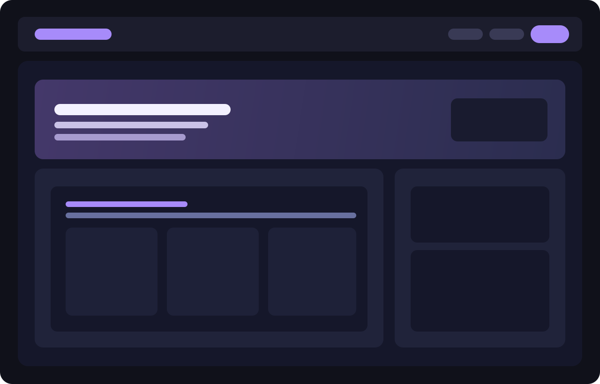

Інтерактивний web app із сучасним UI/UX
Розробили інтерфейс веб-застосунку з модульною архітектурою, навігацією, інтерактивними віджетами, візуалізацією даних та адаптивом.
+58%Швидше виконання дій користувача
7 модулівКерування, фільтри, звіти, нотифікації
99.8%Стабільність UI в продакшені

Потрібен кастомний веб-додаток під ваш процес?
Створимо UX та фронтенд, з яким команда працює швидко і без хаосу.
Запустити проєкт